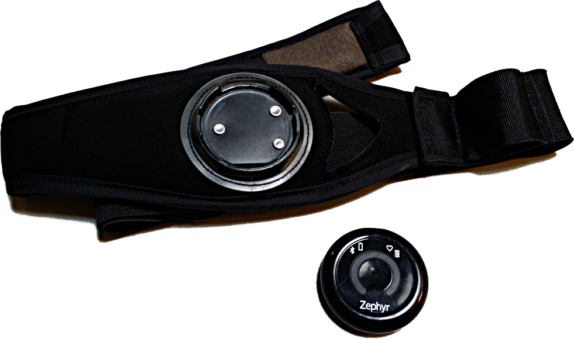
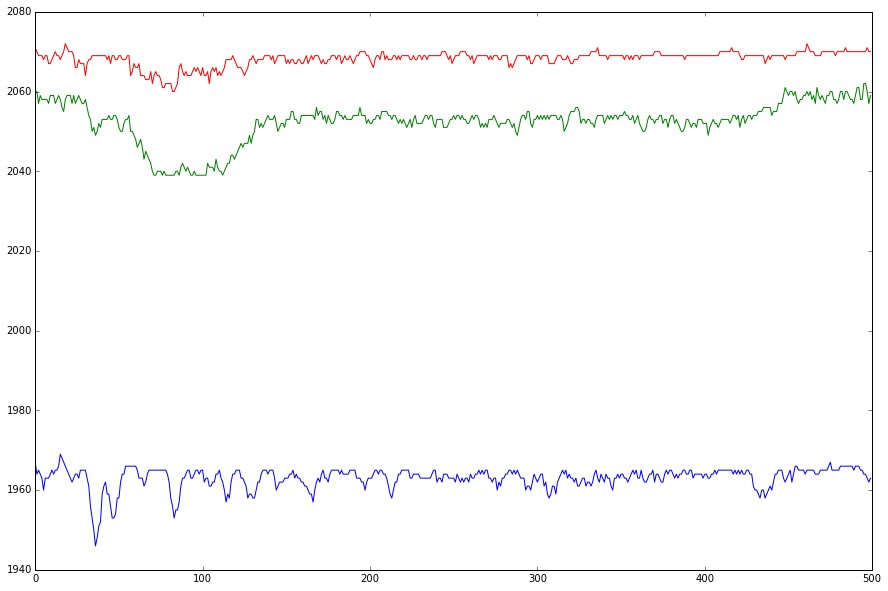
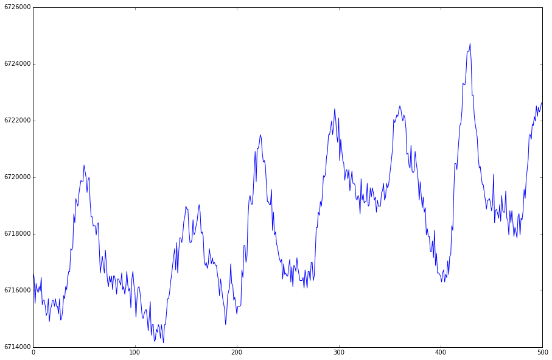
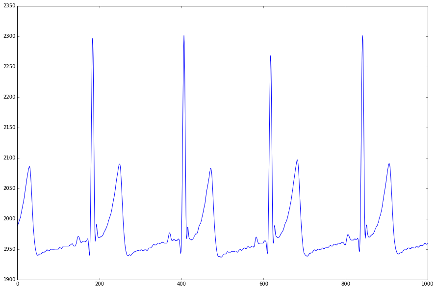
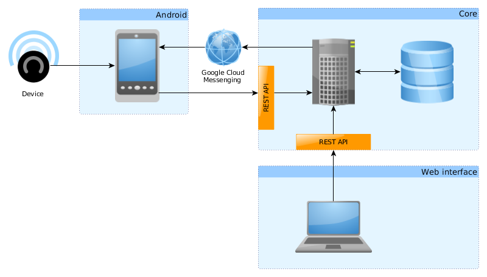
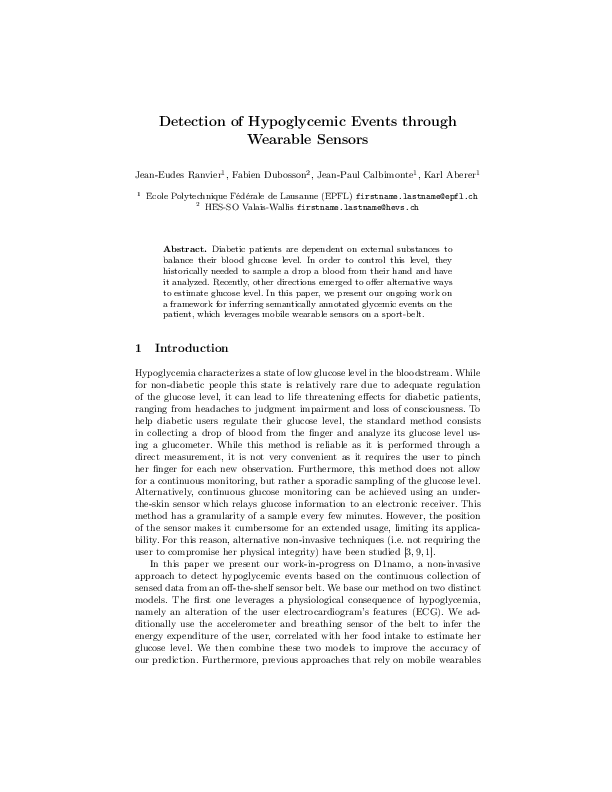
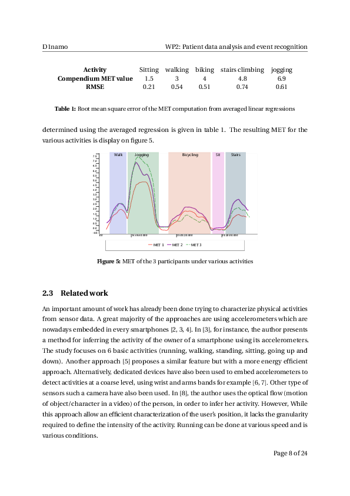
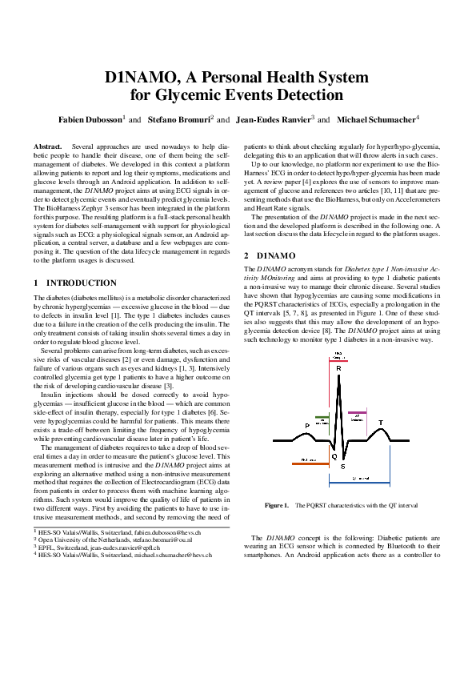
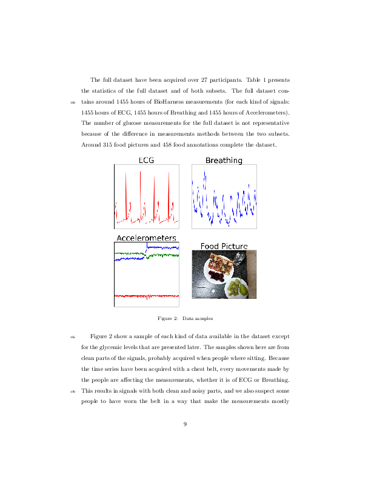

AISLab Research Group
Location
Photo credit: Jean Revillard
Organization
HES-SO (Swiss Universities of Applied Sciences)
Institute of Business Informatics (Sierre)
eHealth Unit
AISLab
eHealth Unit
AISLab
MedGIFT
AISLab
Projects
- Non-invasive Type 1 Diabetes Monitoring
- Electronic Health Record Anonymisation
- Gestational diabetes
- Chronic Obstructive Pulmonary Disease (COPD)
- Therapeutic drug monitoring
- …
D1NAMO
D1NAMO
Diabetes type 1 Non-invasive Activity MOnitoring
| May 2014 | Project started |
| April 2015 | Ethical committee approval (70 pages) |
| May 2015 | Data acquisition started
Platform developed |
| November 2016 | Project finished |
Goals
- Monitoring glucose requires taking drops of blood.
- Predict glucose levels from a non-invasive sensor.
- Improve the quality of life of type 1 diabetic patients.
- Avoid hypoglycemia to increase life expectancy.
Sensor
Zephy BioHarness 3
Signals

Accelerometers

Breathing

ECG
Is it possible to detect hypoglycemia?
Databases
Healthy people
- 20 patients
- ~ 1100 hours of signals
- 470 glucose measurements
- 458 food annotations
- 315 food pictures
Diabetic patients
- 7 patients
- ~ 355 hours of signals
- 6660 glucose measurements
- 100 food annotations
- 69 food pictures
Platform


Results

Ranvier, J.-E.; Calbimonte, J.-P.; Dubosson, F. & Aberer, K.
Detection of Hypoglycemic Events through Wearable Sensors
Proceedings of the 1st Workshop on Semantic Web Technologies for Mobile and Pervasive Environments co-located with
the 13th Extended Semantic Web Conference (ESWC 2016), Heraklion, Greece, May 29, 2016., 2016 , 21-26
Results

Ranvier, J.-E.; Calbimonte, J.-P.; Dubosson, F. & Aberer, K.
Non-invasive Detection of Hypoglycemia for Type 1 Diabetic Patients.
Submitted to «Computers in Biology and Medicine»
Results

Dubosson, F.; Bromuri, S.; Ranvier, J.-E. & Schumacher, M.
D1NAMO, A Personal Health System for Glycemic Events Detection
Workshop Artificial Intelligence for Diabetes, 22nd European Conference on Artificial Intelligence (ECAI 2016),
2016
Results

Dubosson, F; Ranvier, J.-E.; Bromuri, S.; Calbimonte, J.-P.; Ding, S.; Ruiz, J.; Schumacher, M. & Aberer, K.
The open D1NAMO dataset: wearable physiological time series for type 1 diabetes management algorithms
Submitted to the Special Issue «Artificial Intelligence for Diabetes» of «Artificial Intelligence in Medicine»